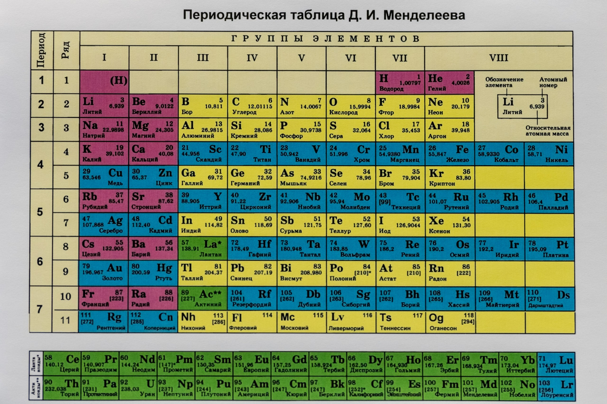

Анкета учащегося
Переход к заданию №3Васильев Константин Сергеевич
Что понравилось:
Предоставлено множество наглядных материалов для самостоятельного обучения и ресурсы.
График учебы позволяет совмещать обучение и работу.
Что не понравилось:
Прочерк. Все отлично.